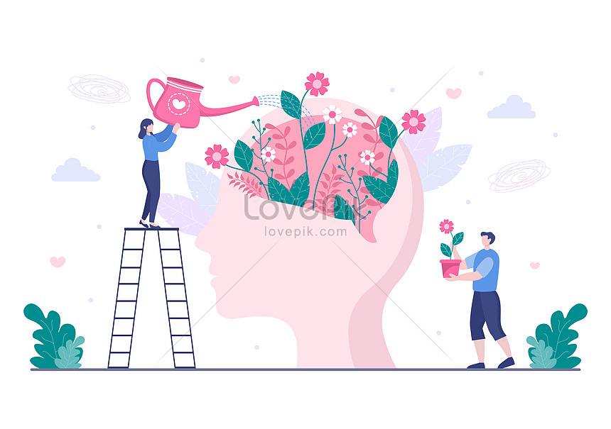

Comunidade de Cuidado Mental: Mente em equilíbrio
A Comunidade de Cuidado Mental é um refúgio seguro onde você pode explorar conteúdos que tocam o coração e a mente, oferecendo esperança e compreensão para aqueles que lidam com depressão e ansiedade. Nós acreditamos na importância do apoio e da empatia na jornada através da saúde mental. Oferecemos uma variedade de recursos, incluindo filmes, séries e livros, que retratam histórias de superação e abordam temas de saúde mental com sensibilidade e profundidade.
Considerando que muitas pessoas enfrentam dificuldades ao lidar adequadamente com indivíduos que sofrem de ansiedade e depressão, o site é destinado a abordar o tema da depressão de forma lúdica, porém impactante, visando criar um vínculo empático com o público-alvo e promover a reflexão. Além do objetivo de proporcionar uma visão mais abrangente e acolhedora para aqueles que enfrentam esses desafios, a proposta inclui análises aprofundadas de filmes, personagens e temas que abordam essas doenças. Ao lidar com indivíduos que sofrem de ansiedade e depressão, muitas pessoas enfrentam dificuldades que são realmente importantes para abordar. As situações podem ser desafiadoras para alguém que as vive , e a falta de compreensão e apoio pode agravar a situação. Assim, o que devemos considerar serão os problemas a abordar são os estigmas e a falta de informação sobre as doenças.

O principal benefício que a solução trará é a promoção de um ambiente mais compreensivo e acolhedor para pessoas afetadas por ansiedade e depressão. Isso inclui a redução dos estigmas e preconceitos relacionados a essas condições, além de proporcionar informações valiosas e recursos para aqueles que buscam compreender e lidar melhor com essas realidades. Para abordar esta questão , é essencial promover a sensibilização e a educação sobre saúde mental. Além de trazer autoconhecimento, pertencimento e apoio a quem sofre, isso implica entender os sintomas e os desafios enfrentados por quem vive com essas condições e as melhores formas de oferecer apoio e assistência.
A abordagem lúdica e empática adotada, que aproveita análises de filmes, personagens e temas relacionados para transmitir mensagens importantes sobre saúde mental, é a base da inovação e diferenciação da solução. Um público mais amplo pode ser exercitado e impactado por essa abordagem criativa e engajadora, tornando-os mais acessíveis e eficientes na conscientização e no apoio à saúde mental.
